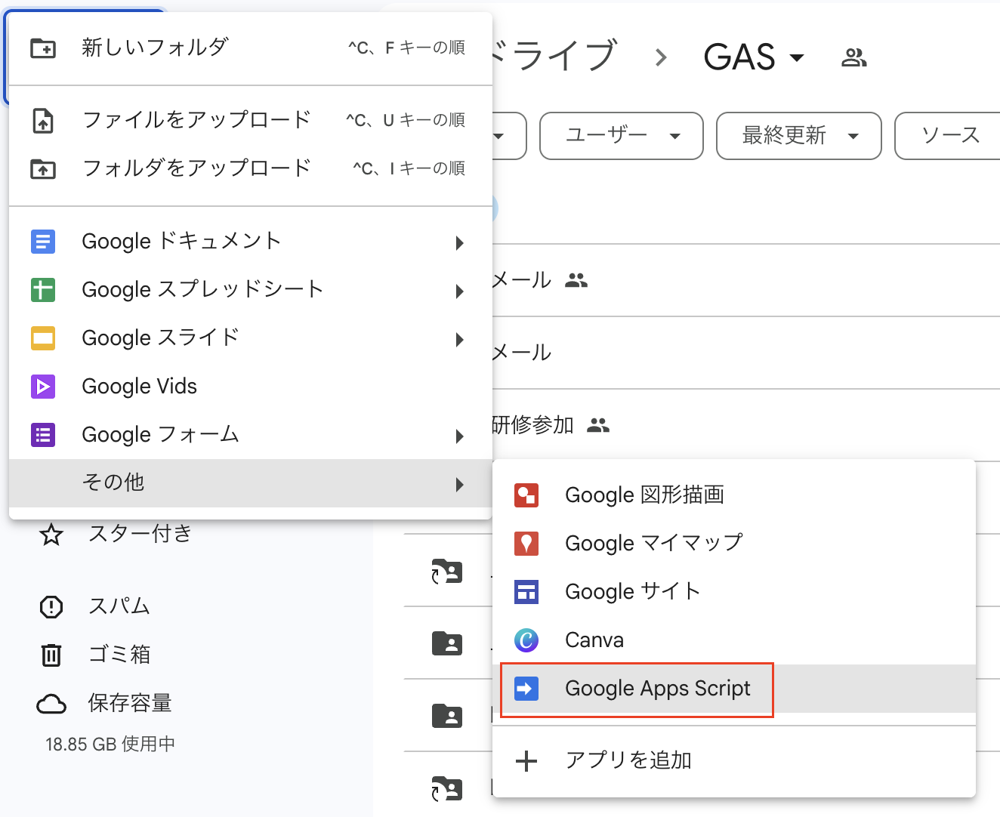
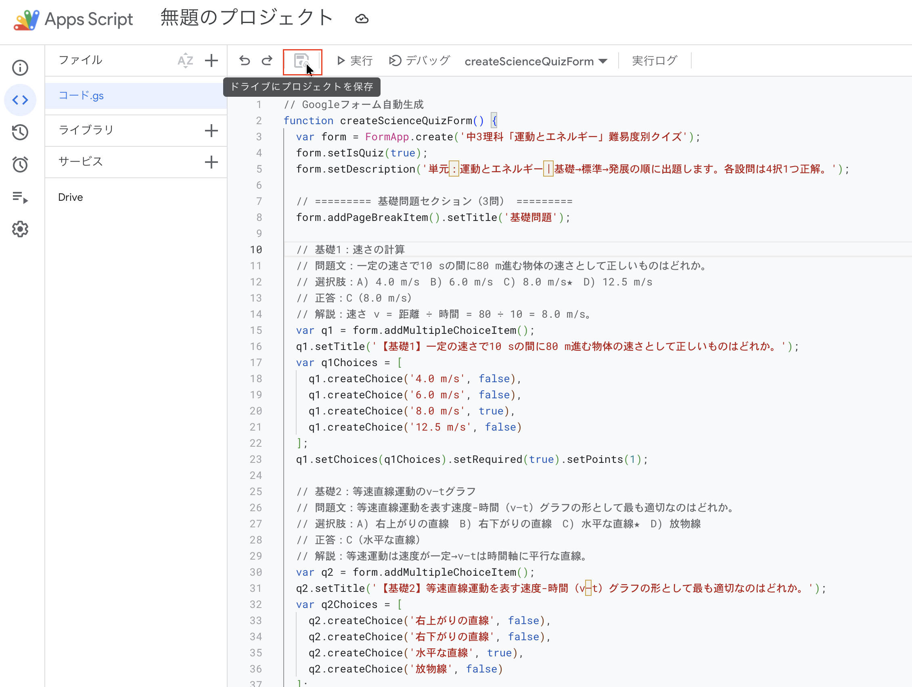
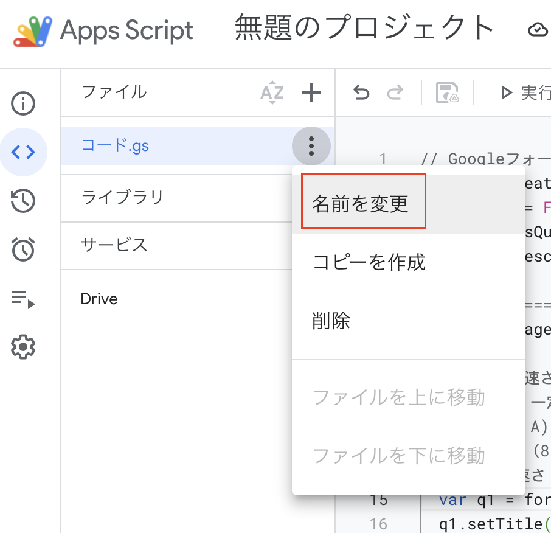
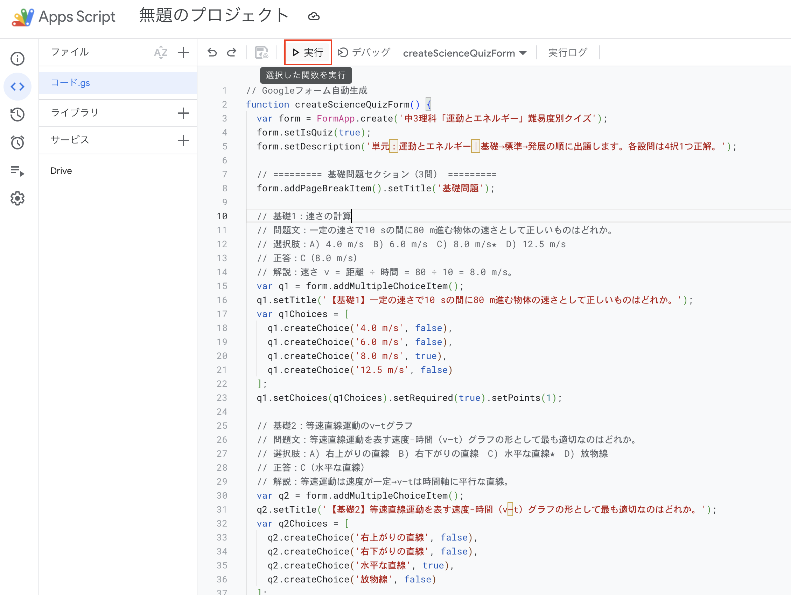
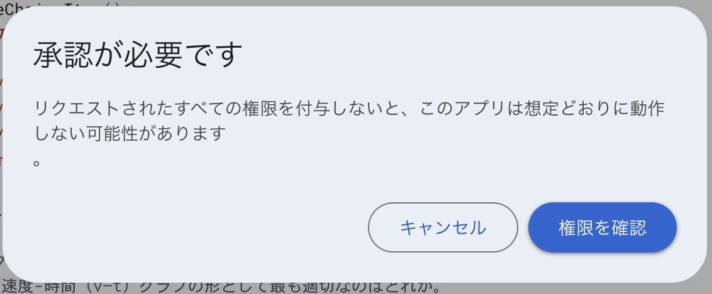
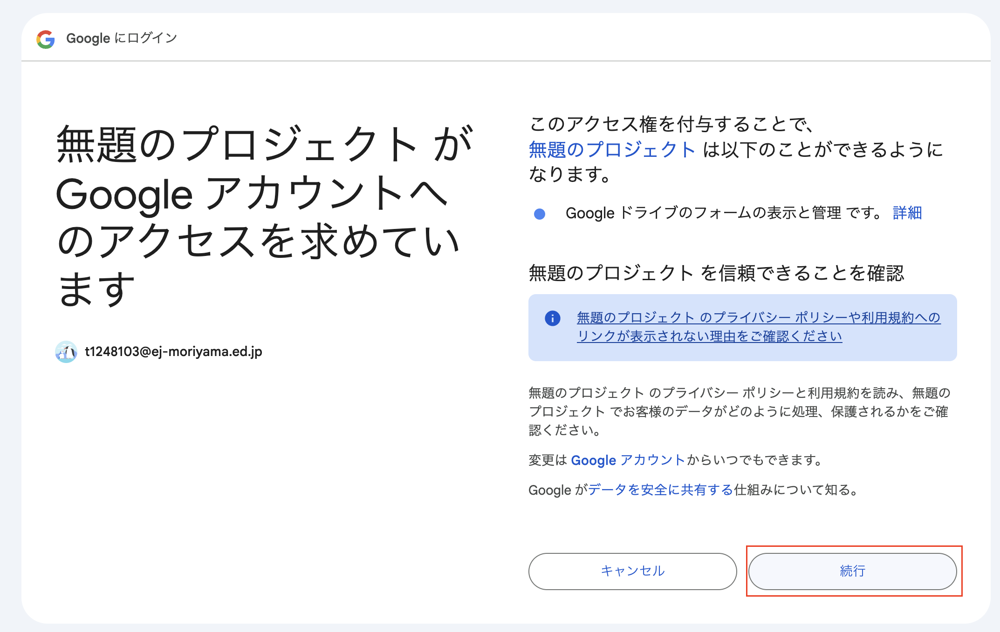
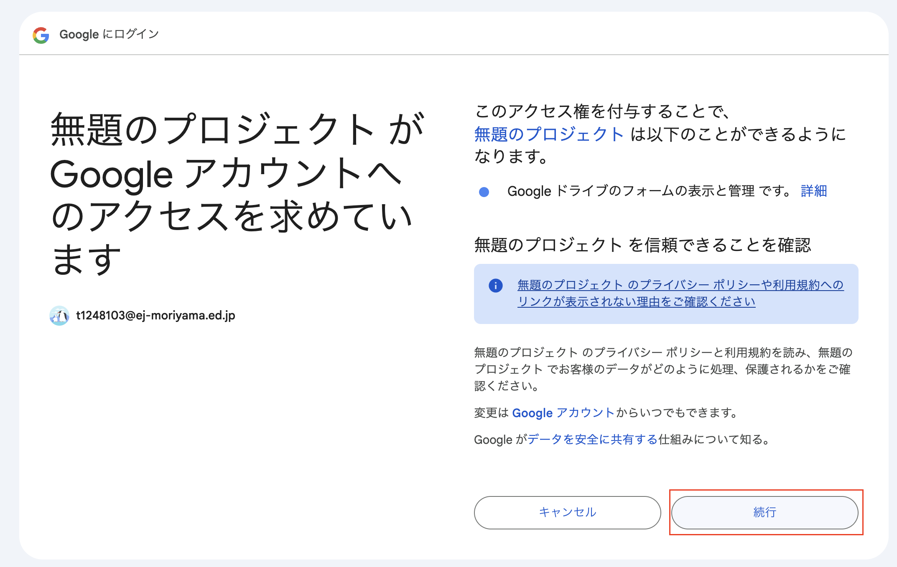
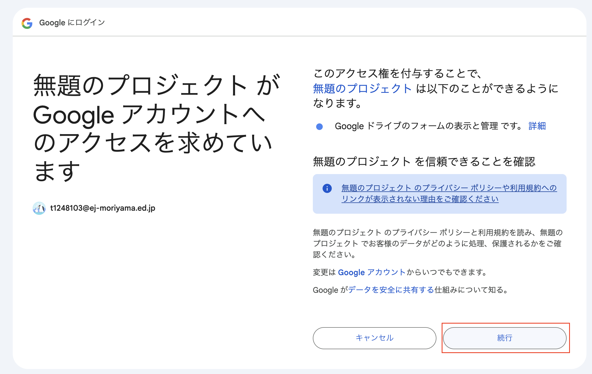

1. テスト問題・小テスト作成 プロンプト例
単元名を入力するだけで、問題・解答・解説を自動生成するプロンプト例です。
基本プロンプト例
中学2年生の理科「電流と電圧」の単元について、以下の条件で小テストを作成してください。
【条件】
- 問題数：5問
- 形式：4択の選択問題
- 難易度：基礎レベル
- 各問題に解答と簡潔な解説を付ける
【出力形式】
問題1: [問題文]
A) [選択肢1]
B) [選択肢2]
C) [選択肢3]
D) [選択肢4]
解答： [正解]
解説： [解説文]
この形式で5問作成してください。
応用プロンプト例（GASでGoogleフォーム出力／動作エラー防止版）
中学3年生の理科「運動とエネルギー」単元について、難易度別（基礎3問・標準3問・発展2問）で4択選択式の小テストを作成し、すべての問題に「解答」を付けてGoogleフォーム化するGoogle Apps
Script（GAS）コードを作成してください。
【要件】
- 問題は4択選択式とし、「正解」を設定する
- 「基礎」「標準」「発展」の順にGoogleフォームの各セクションへ追加する
- 各問題に必ず解答（正答）を設定する
- 未使用な関数・変数などは記載しない
- コードは実行時にエラーが起きないようにする（必須部分のみ記載）
- コードにコメントで問題文・選択肢・正答/解説も明示
【出力例（冒頭部、問題はAIが自動生成）】
// Googleフォーム自動生成
function createScienceQuizForm() {
var form = FormApp.create('中3理科「運動とエネルギー」難易度別クイズ');
// 基礎問題セクション
var basicSection = form.addPageBreakItem().setTitle('基礎問題');
// 例題
var q1 = form.addMultipleChoiceItem()
.setTitle('【基礎1】[ここに問題文]')
.setChoices([
q1.createChoice('[選択肢A]', true),
q1.createChoice('[選択肢B]', false),
q1.createChoice('[選択肢C]', false),
q1.createChoice('[選択肢D]', false)
])
.setRequired(true);
// --- 他の問題も同様に記載 ---
// ...以降、標準問題・発展問題セクションも同様に追加
}
この形式ですべての問題・解答を漏れなく記入したGASコードとして出力してください（未使用の関数や変数は記載しません／動作エラーが起きないように注意）。
Google Apps Script（GAS）コードの実行方法
1
Google ドライブを開いて、「新規」→「その他」→「Google Apps Script」を選びます。

2
エディタ画面が開いたら、プロンプトで生成したGASコードを貼り付け保存します。

3
ファイル名を分かりやすく変更します（例:
science_quiz.gs）。

4
画面上部の「関数を選択」から
createScienceQuizFormを選び、▶（実行ボタン）で実行します。

5
初回のみ「認証（アクセス権限）」の画面が出るので、指示に従い「許可」してください。

 


6
実行が成功するとGoogleフォームがマイドライブ直下に自動生成されます。内容を確認し編集・配布してください。
注意：Googleアカウントの組織設定によってはGASの利用制限があります。学校や自治体のアカウントで使えない場合も、個人のGoogleアカウントで同様にフォームを作成できます（※個人用アカウントをご自身の責任でご利用ください）。
利用可否が不明な場合は、管理者へご確認ください。
利用可否が不明な場合は、管理者へご確認ください。